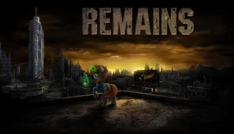

Fallout Equestria: Remains, se baseia em um jogo a qual tentar aplicar as mecánicas da série de jogos Fallout em um jogo de rpg, plataforma e ação 2d, com base no universo da série de My Little Pony.
Tendo grande inspiração nos jogos oficiais de Fallout e Fallout 2 pela sua natureza 2D.

Página de download do jogo.